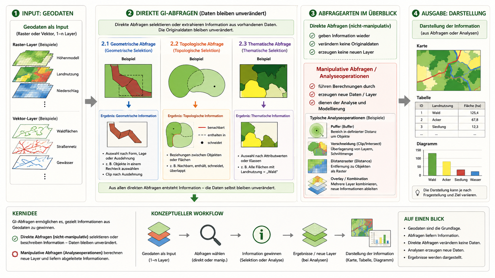
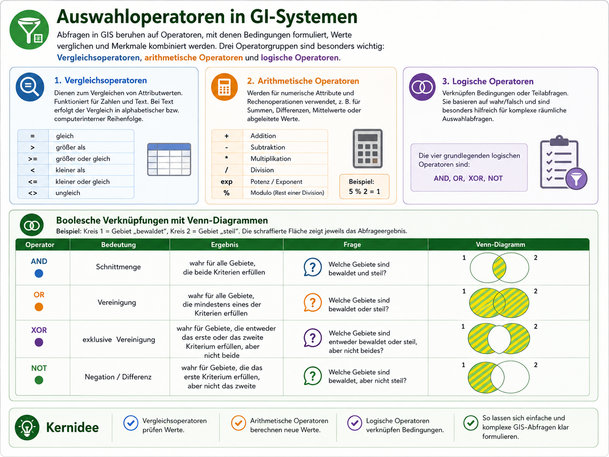
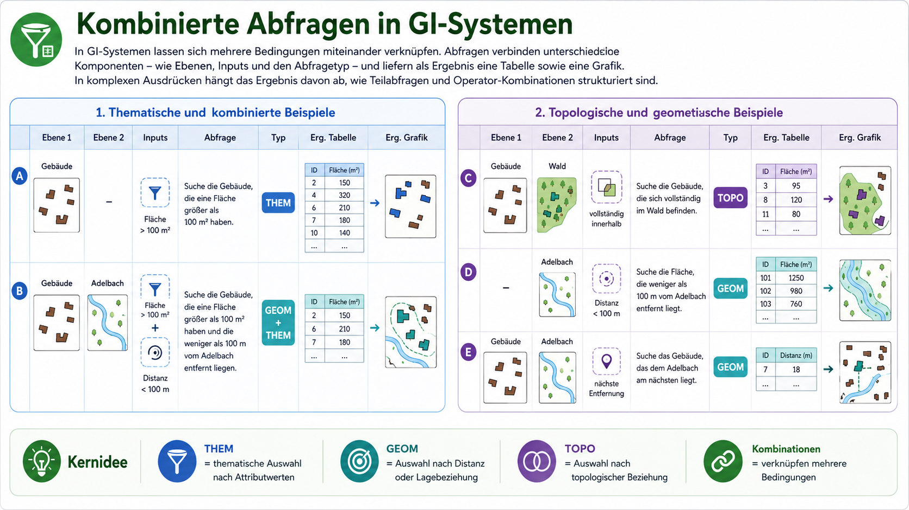

Im Rahmen der Datenanalyse sind grundsätzlich drei Vorgehensweisen möglich (vgl. Abbildung 03-01):
- Thematische Abfragen: Wählt die Objekte aus, deren Eigenschaften (Attribute) die vorgegebenen Bedingungen erfüllen - z.B.: „Selektiere alle Bäume der Art Fichte.“
- Geometrische Abfragen: Wählt die Objekte aus, die die räumlichen Bedingungen erfüllen, z.B.: „Selektiere alle Häuser, die weniger als 250 m vom Fluss entfernt sind.“
- Topologische Abfragen: Wählt die Objekte aus, die die gegebenen Bedingungen bezüglich der räumlichen Beziehungen zwischen den Objekten erfüllen, z.B.: “Selektiere alle Gebäude, die vollständig in der Wohnzone II (WII) liegen.

Auswahloperatoren
Abfragen in GI-Systemen beruhen auf Operatoren. Operatoren legen fest, wie Bedingungen formuliert, Werte verglichen oder mehrere Kriterien miteinander verknüpft werden. Damit sind sie die sprachliche und rechnerische Grundlage vieler GIS-Abfragen.
Eine Abfrage kann sehr einfach sein:
Landnutzung = 'Wald'Sie kann aber auch mehrere Bedingungen kombinieren:
Landnutzung = 'Wald' AND Hangneigung > 15In beiden Fällen wird aus vorhandenen Geodaten eine Auswahl erzeugt. Die Originaldaten bleiben dabei unverändert. Erst wenn die Auswahl weiterverarbeitet, gespeichert, gepuffert, verschnitten oder als neuer Layer ausgegeben wird, entsteht daraus eine neue Datenebene.
Grundlegend lassen sich drei Operatorgruppen unterscheiden:
- Vergleichsoperatoren prüfen, ob ein Attributwert eine Bedingung erfüllt.
- Arithmetische Operatoren berechnen neue numerische Werte.
- Logische Operatoren verknüpfen mehrere Bedingungen zu einer gemeinsamen Abfrage.
Vergleichsoperatoren
Vergleichsoperatoren werden verwendet, um Attributwerte zu prüfen. Sie beantworten Fragen wie: Ist ein Wert gleich einem bestimmten Begriff? Ist eine Fläche größer als ein Schwellenwert? Liegt ein Messwert unter einer Grenze?
Typische Beispiele sind:
Landnutzung = 'Wald'
Fläche > 100
Höhe <= 300
Name <> 'Marburg'| Operator | Bedeutung | Beispiel |
|---|---|---|
= |
gleich | Landnutzung = 'Wald' |
> |
größer als | Fläche > 100 |
>= |
größer oder gleich | Höhe >= 300 |
< |
kleiner als | Distanz < 500 |
<= |
kleiner oder gleich | Hangneigung <= 10 |
<> |
ungleich | Landnutzung <> 'Siedlung' |
Vergleichsoperatoren können für Zahlen und Texte verwendet werden. Bei Zahlen ist die Bedeutung direkt verständlich. Bei Texten beziehen sich Vergleiche wie „größer als“ oder „kleiner als“ nicht auf eine fachliche Größe, sondern auf eine interne alphabetische beziehungsweise zeichencodierte Ordnung. Für GIS-Abfragen sind bei Textattributen deshalb meist = und <> die wichtigsten Operatoren.
Arithmetische Operatoren
Arithmetische Operatoren werden für numerische Attribute verwendet. Mit ihnen lassen sich Werte berechnen, umformen oder miteinander kombinieren. Sie sind besonders wichtig, wenn aus vorhandenen Attributen neue Kennwerte abgeleitet werden sollen.
Typische Beispiele sind:
Fläche_ha = Fläche_m2 / 10000
Dichte = Einwohner / Fläche_km2
Kosten = Distanz * Kosten_pro_Meter| Operator | Bedeutung | Beispiel |
|---|---|---|
+ |
Addition | A + B |
- |
Subtraktion | A - B |
* |
Multiplikation | A * B |
/ |
Division | A / B |
exp |
Potenz / Exponent | exp(A) |
% |
Modulo, Rest einer ganzzahligen Division | 5 % 2 = 1 |
Arithmetische Operatoren verändern nicht automatisch den Datenbestand. Sie erzeugen zunächst einen berechneten Ausdruck. Erst wenn das Ergebnis als neues Attribut, neuer Layer oder neues Raster gespeichert wird, entsteht eine neue Datenebene.
Logische Operatoren
Logische Operatoren verknüpfen mehrere Bedingungen. Jede einzelne Bedingung kann dabei entweder wahr oder falsch sein. Logische Operatoren legen fest, welche Kombination dieser Bedingungen als Treffer gilt.
Beispiel:
Landnutzung = 'Wald'
Hangneigung > 15Diese beiden Bedingungen können unterschiedlich kombiniert werden:
| Operator | Bedeutung | Ergebnisfrage |
|---|---|---|
AND |
Schnittmenge | Welche Objekte erfüllen beide Bedingungen? |
OR |
Vereinigung | Welche Objekte erfüllen mindestens eine der Bedingungen? |
XOR |
exklusive Vereinigung | Welche Objekte erfüllen genau eine der Bedingungen, aber nicht beide? |
NOT |
Negation / Ausschluss | Welche Objekte erfüllen eine Bedingung nicht? |
Bei AND müssen beide Bedingungen erfüllt sein:
Landnutzung = 'Wald' AND Hangneigung > 15Die Abfrage findet nur Objekte, die bewaldet und gleichzeitig steil sind.
Bei OR reicht eine der beiden Bedingungen:
Landnutzung = 'Wald' OR Hangneigung > 15Die Abfrage findet Objekte, die bewaldet sind, steil sind oder beides zugleich.
Bei XOR wird genau eine Bedingung zugelassen, aber nicht beide gemeinsam:
Landnutzung = 'Wald' XOR Hangneigung > 15Die Abfrage findet also bewaldete, nicht steile Objekte sowie steile, nicht bewaldete Objekte. Bewaldete und zugleich steile Objekte werden ausgeschlossen.
Bei NOT wird eine Bedingung umgekehrt:
NOT Landnutzung = 'Wald'Die Abfrage findet alle Objekte, die nicht als Wald klassifiziert sind.

In vielen GIS-Programmen entsprechen die Booleschen Operatoren direkt aufrufbaren Funktionen und tragen oft ähnliche Namen. So entspricht in vielen GIS-Programmpaketen die Funktion INTERSECT dem Operanden AND, UNION dem Operanden OR und ERASE dem Operanden NOT. Die letztgenannte Funktion wird auch sehr anschaulich „Cookie-Cutting“ genannt, da die Form des zweiten Kriteriums wie beim Plätzchenbacken aus dem ausgerollten Teig des ersten „ausgestochen“ wird.
Kombination mehrerer Bedingungen
In GIS-Abfragen werden Operatoren häufig kombiniert. Dadurch lassen sich fachlich präzisere Fragen formulieren:
Landnutzung = 'Wald' AND Hangneigung > 15 AND Distanz_Strasse > 200Diese Abfrage sucht Waldflächen, die steil sind und weiter als 200 Meter von einer Straße entfernt liegen.
Bei komplexeren Abfragen muss die Reihenfolge der Auswertung eindeutig sein. Klammern helfen, die fachliche Logik sichtbar zu machen:
(Landnutzung = 'Wald' OR Landnutzung = 'Gebüsch')
AND
Hangneigung > 15Diese Abfrage sucht steile Flächen, die entweder Wald oder Gebüsch sind.
Ohne Klammern kann unklar werden, welche Bedingungen zuerst zusammengehören. Deshalb sollten komplexe Abfragen immer so geschrieben werden, dass die fachliche Logik direkt erkennbar ist.

Kernidee
Operatoren sind das zentrales Steuerkonzept in Abfragen. Sie übersetzen eine fachliche Frage in eine prüfbare GIS-Abfrage. Entscheidend ist daher nicht nur, ob die Syntax stimmt, sondern ob die formulierte Bedingung wirklich zur räumlichen Fragestellung passt.
Eine gute GIS-Abfrage besteht aus drei Schritten:
fachliche Frage
→ geeignete Bedingungen
→ passende Operatoren